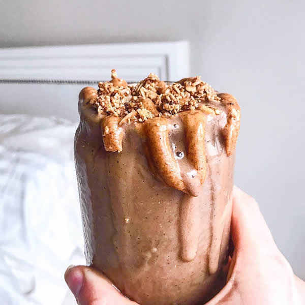

This Velvety Chocolate Banana Peanut Butter Protein Shake is a rich, creamy blend that tastes like a decadent dessert while fueling your body. It pairs the natural sweetness of ripe bananas with the nutty richness of smooth peanut butter, all elevated by a deep, indulgent chocolate protein base. The frozen banana creates a thick, milkshake-like texture without needing heavy cream or excess ice. Packed with clean energy and essential nutrients, it serves as the ultimate post-workout recovery fuel or a satisfying, quick breakfast on the go.